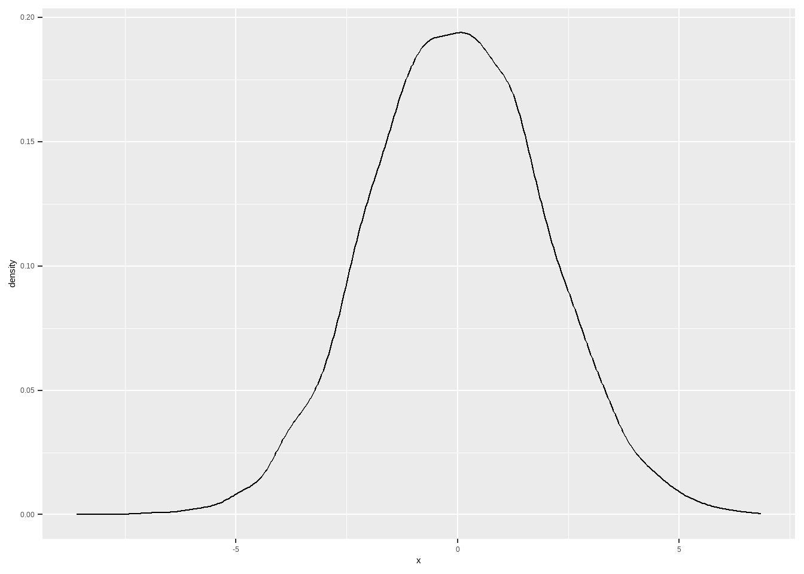
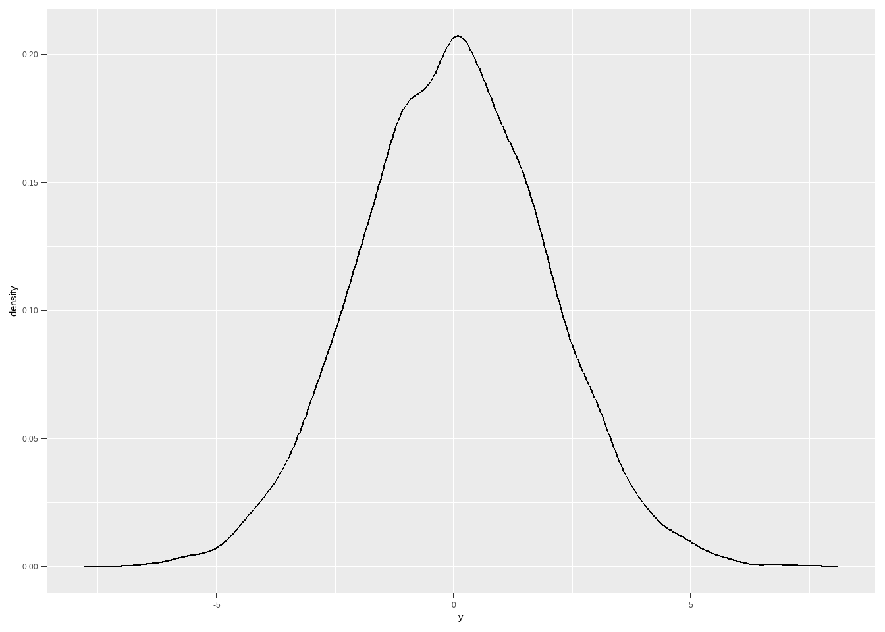
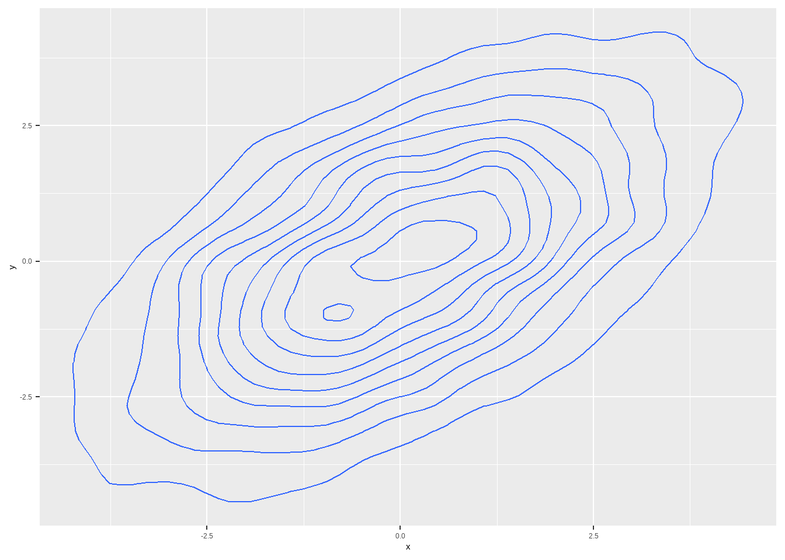

Capítulo 7 - Estimação
Nós já vimos que é possível mostrar que o preditor linear ótimo com um único regressor possui intercepto \(\alpha = \mathbb{E}[Y] - \beta*\mathbb{E}[X]\) e inclinação \(\beta = Cov(X,Y)/Var(X)\). Isso significa que, se nós considerarmos o modelo de regressão \(y_i = \alpha + \beta*x_i + e_i\), e usarmos essas fórmulas para calcular os valores de \(\alpha\) e \(\beta\) em uma população, obteríamos uma reta ajustada que é o melhor preditor linear.
Até o momento, estávamos trabalhando com a população. Porém, na prática estaremos sempre lidando com uma amostra, de forma que precisamos entender como funciona a estimação de uma regressão a partir de uma amostra.
7.1 Plug-in estimators
Se tivermos uma amostra, e não a população, é razoável pensar que uma boa estimativa para os valores populacionais de \(\alpha\) e \(\beta\) são justamente essas fórmulas, calculadas para os dados amostrais. Esse estimador dos parâmetros populacionais nós chamamos de plug-in estimates, pois sem maiores teorias, assumimos que o que vale para a população vale para a amostra. Para diferenciar as estimativas amostrais dos valores populacionais, é comum usarmos \(\hat{\beta}\) em vez de \(\beta\), ou então letras latinas \(b\) em vez das gregas \(\beta\). Vou usar letras gregas com o “chapéu”, mas outros textos utilizam letras latinas .
Ou seja, \(\hat{\beta} = \frac{\sum{(x_i - \bar{x})(y_i - \bar{y})}}{\hat{\sigma_x}^2}\)
7.2 Simulando de uma Normal Bivariada
Uma distribuição de probabilidade de \(X\) e \(Y\) é Normal bivariada quando \(aX + bY\) é Normal também, para quaisquer \(a\) e \(b\). Para nós, importa aqui que \(X\) e \(Y\) são normais cada uma, e a conjunta deles também é Normal.
E diferentemente da Normal univariada, preciso representar os parâmetros por meio de vetores. A média, que antes era um escalar, agora será representada por um vetor: \(\mu = (\mu_x, \mu_y)\). Mesmo que \(\mu_x = \mu_y\), ainda assim preciso representar por um vetor. E a variância também não consegue especificartudo que preciso saber sobre a variação nos dados. Eu preciso saber, a variância de \(X\), dada por \(\sigma_x\), a variância de \(Y\), \(\sigma_x\) e a covariância entre \(X\) e \(Y\) e \(Y\) e \(X\), dadas respectivamente por \(\mathbb{Cov}[X,Y]\) e \(\mathbb{Cov}[Y,X]\), que obviamente serão iguais. E nós representamos essas quatro informações por meio de uma matriz, chamada de matriz de covariância ou matriz de variância-covariância:
\[ \Sigma = \begin{bmatrix} \sigma_x & \mathbb{Cov}[Y,X] \\ \mathbb{Cov}[X,Y] & \sigma_y \end{bmatrix} \] Essa matriz precisa ser positiva-definida, que é uma característica de matrizes, mas que basicamente tem a ver com o fato de que não existe variância negativa e dadas as variâncias de \(X\) e \(Y\), existem limites para o que a covariância pode ser.
Como escolher os valores para essa matriz não é nada intuitivo, vamos trabalhar com a correlação, que temos ma noção melhor. Para isso, utilizaremos a seguinte relação:
\[ \Sigma = \begin{bmatrix} \sigma_x^2 & \rho \cdot \sigma_x \cdot \sigma_y \\ \rho \cdot \sigma_x\cdot \sigma_y & \sigma_y \end{bmatrix} \] Ou seja, a matriz de variância-covariância pode ser parametrizada apenas em função dos desvios-padrões e da correlação entre as duas variáveis.
library(ggplot2)
library(tidyverse)
# vetor de médias
vetor_media <- c(0,0)
sigma_x <- 2
sigma_y <- 2
rho <- .6
matriz_var_cov <- matrix(c(sigma_x^2, rho*sigma_x*sigma_y, rho*sigma_x*sigma_y, sigma_y^2 ), byrow=T, nrow=2)
matriz_var_cov %>%
kable()| 4.0 | 2.4 |
| 2.4 | 4.0 |
set.seed(345)
norm_bivariada <- MASS::mvrnorm(n = 10000, mu = vetor_media, Sigma = matriz_var_cov)
bivariada_tibble1 <- as_tibble(norm_bivariada, .name_repair = "universal") %>%
rename(x = '...1',
y = '...2')
bivariada_tibble1 %>%
ggplot(aes(x)) + geom_density()


Vamos usar esses dados para fazer uma regressão.
##
## Call:
## lm(formula = y ~ x, data = bivariada_tibble1)
##
## Residuals:
## Min 1Q Median 3Q Max
## -5.7942 -1.0639 -0.0067 1.0740 6.4187
##
## Coefficients:
## Estimate Std. Error t value Pr(>|t|)
## (Intercept) -0.014913 0.015907 -0.937 0.349
## x 0.588264 0.008073 72.870 <2e-16 ***
## ---
## Signif. codes: 0 '***' 0.001 '**' 0.01 '*' 0.05 '.' 0.1 ' ' 1
##
## Residual standard error: 1.591 on 9998 degrees of freedom
## Multiple R-squared: 0.3469, Adjusted R-squared: 0.3468
## F-statistic: 5310 on 1 and 9998 DF, p-value: < 2.2e-16A fórmula do \(\beta\) nós sabemos que depende da covariância entre as variáveis e o desvio-padrão de \(X\). Vamos então simular os dados novamente, mudando as correlações e variâncias, para entender como isso impacta a regressão a partir da fórmula da inclinação da reta.
library(ggplot2)
library(tidyverse)
# vetor de médias
vetor_media <- c(0,0)
# cov menor, dp o mesmo
sigma_x <- 2
sigma_y <- 2
rho <- .3
matriz_var_cov <- matrix(c(sigma_x^2, rho*sigma_x*sigma_y, rho*sigma_x*sigma_y, sigma_y^2 ), byrow=T, nrow=2)
matriz_var_cov %>%
kable()| 4.0 | 1.2 |
| 1.2 | 4.0 |
set.seed(345)
norm_bivariada <- MASS::mvrnorm(n = 10000, mu = vetor_media, Sigma = matriz_var_cov)
bivariada_tibble2 <- as_tibble(norm_bivariada, .name_repair = "universal") %>%
rename(x = '...1',
y = '...2')
bivariada_tibble2 %>%
ggplot(aes(x, y)) + geom_point()# cov igual, dp de x maior
rho <- .3
sigma_x <- 4
matriz_var_cov <- matrix(c(sigma_x^2, rho*sigma_x*sigma_y, rho*sigma_x*sigma_y, sigma_y^2 ), byrow=T, nrow=2)
matriz_var_cov %>%
kable()| 16.0 | 2.4 |
| 2.4 | 4.0 |
set.seed(345)
norm_bivariada <- MASS::mvrnorm(n = 10000, mu = vetor_media, Sigma = matriz_var_cov)
bivariada_tibble3 <- as_tibble(norm_bivariada, .name_repair = "universal") %>%
rename(x = '...1',
y = '...2')
bivariada_tibble3 %>%
ggplot(aes(x, y)) + geom_point()# cov maor, dp de x maior
rho <- .15
sigma_x <- 4
sigma_y <- 2
matriz_var_cov <- matrix(c(sigma_x^2, rho*sigma_x*sigma_y, rho*sigma_x*sigma_y, sigma_y^2 ), byrow=T, nrow=2)
matriz_var_cov %>%
kable()| 16.0 | 1.2 |
| 1.2 | 4.0 |
set.seed(345)
norm_bivariada <- MASS::mvrnorm(n = 10000, mu = vetor_media, Sigma = matriz_var_cov)
bivariada_tibble4 <- as_tibble(norm_bivariada, .name_repair = "universal") %>%
rename(x = '...1',
y = '...2')
bivariada_tibble4 %>%
ggplot(aes(x, y)) + geom_point()O R mostra os resultados da regressão desse jeito, e vamos aprender a interpretá-lo, mas vamos também apresentar em um formato mais amigável e, caso vocês utilizem o rmarkdown, poderão utilizar em trabalhos acadêmicos. Para isso, utilizaremos o pacote stargazer
reg2 <- lm( y ~x , data = bivariada_tibble2)
reg3 <- lm( y ~x , data = bivariada_tibble3)
reg4 <- lm( y ~x , data = bivariada_tibble4)library("stargazer")
stargazer::stargazer(list(reg1, reg2, reg3, reg4), type = "html",
title = "Regressão linear", omit.stat = "f",
column.labels=c("cov = 2.4, s_x = 2", "cov = 1.2, s_x = 2", "cov = 2.4, s_x = 4", "cov = 1.2, s_x = 4" ))| Dependent variable: | ||||
| y | ||||
| cov = 2.4, s= 2 | cov = 1.2, s= 2 | cov = 2.4, s= 4 | cov = 1.2, s= 4 | |
| (1) | (2) | (3) | (4) | |
| x | 0.588*** | 0.284*** | 0.148*** | 0.073*** |
| (0.008) | (0.010) | (0.005) | (0.005) | |
| Constant | -0.015 | -0.019 | 0.014 | 0.014 |
| (0.016) | (0.019) | (0.019) | (0.020) | |
| Observations | 10,000 | 10,000 | 10,000 | 10,000 |
| R2 | 0.347 | 0.081 | 0.085 | 0.021 |
| Adjusted R2 | 0.347 | 0.081 | 0.085 | 0.021 |
| Residual Std. Error (df = 9998) | 1.591 | 1.892 | 1.904 | 1.974 |
| Note: | p<0.1; p<0.05; p<0.01 | |||
7.3 Suposições amostrais de MQO
Quando temos uma amostra, é comum supormos que os dados são independentes e identicamente distribuídos, i.i.d. Esse tipo de amostra às vezes é chamada de amostra aleatória simples. Isso é tipicamente válido em dados de corte transversal (cross-section) como uma pesquisa de opinião (survey) de intenção de voto, amostra pequena (mil, dois mil) de alunos do Brasil a partir de dados doe Censo Escolar e assim por diante. O ponto é que os dados precisam ser dispersos. Se você coletar alunos de uma mesma escola, eles não tenderão a ser independentes. Se amostrar eleitores de um mesmo bairro, tampouco haverá independência. Há formas de lidar com isso, e aprenderemos mais tarde. Por enquanto, tratemos do caso mais simples.
A suposição de que dados são i.i.d significa que, em uma amostra com duas variáveis, \(X\) e \(Y\), o par \(x_i, y_i\) é independente de \(x_j, y_j\), com \(i \neq j\) e identicamente distribuídos, isto é, com a mesma distribuição. Essa suposição é importante para calcular a variância dos nossos estimadores, não para a estimativa pontual deles.
7.4 Modelo de Média amostral
Como vimos, o modelo de regressão mais simples é aquele sem preditores, em que \(Y = \mu + e\). O estimador de mínimos quadrados para \(\hat{\mu}\) é a média amostral, \(\bar{y}\). Notem que \(\mathbb{E}[Y]\) é a esperança populacional e \(\mu\) é o valor da esperança, já que a esperança do erro \(e\) é zero. Vamos então calcular a média de nosso estimador \(\bar{y}\) e sua variância.
\[ \mathbb{E}[\bar{y}] = \mathbb{E}[\sum{y_i}/n] = (1/n) * \sum{\mathbb{E}[y_i]} = (1/n)*\mu*n = \mu \]
Portanto, o valor esperando do estimador de mínimos quadrados (a média amostral) é igual à média populacional. Quando isso acontece, isto é, quando a esperança de um estimador é igual ao parâmetro populacional dizemos que o estimador é não-viesado.
Definição 7.1. Um estimador \(\hat{\theta}\) é não-viesado quando \(\mathbb{E}[\hat{\theta}] = \theta\).
Agora, vamos calcular a variância da média amostral sob a suposição de que a amostra é i.i.d. Considerando \(Y_i = \mu + e_i\), temos:
\[ \bar{y} = \sum{y_i}/n = \sum{(\mu + e_i)}/n = \sum{\mu}/n + \sum{e_i}/n = \mu + \sum{e_i}/n \]
Rearranjando, temos: \(\bar{y} - \mu = \sum{e_i}/n\)
A variância então pode ser calculada como:
\[ \mathbb{Var}[\bar{y}] = \mathbb{E}[(\bar{y} - mu)^2] \] \[ = \mathbb{E}[( \sum\limits_{i=1}^n {e_i}/n)*( \sum\limits_{j=1}^n{e_j}/n)] = (1/n^2)* \sum\limits_{i=1}^n{} \sum\limits_{j=1}^n{}\mathbb{E}[e_ie_j] \] Se nós somarmos o somatório indexado no \(j\), o primeiro erro fica constante (indexado no i) e vamos passar por todo os erros de \(1\) até \(n\). Eventualmente, vamos passar por \(i\) e todos os outros diferentes de \(i\). Sabendo que os erros são i.i.d, isso significa que erros diferentes são não correlacionados e possuem esperança zero, ou seja, \(\mathbb{E}[e_ie_j] = 0, i \neq j\), e erros iguais, por serem da mesma distribuição, têm \(\mathbb{E}[e_ie_i] = \sigma^2\). Então o resultado do último somatório é uma soma de zeros, exceto para o caso em que \(i = j\), em que dá \(\sigma^2\). De forma que a equação fica:
\[ (1/n^2)* \sum\limits_{i=1}^n{}\sigma^2 = (1/n^2)*n*\sigma^2 = \sigma^2/n \] Ou seja, a variância de nosso estimador é igual à variância populacional dividida pelo tamanho da amostra. A variância amostral do estimador também é chamada de erro padrão.
7.5 Modelo de Regressão Linear com preditores
Tendo mostrado que o estimador é não-viesado e calculado a variância amostral para o caso mais simples, sem preditor, vamos agora fazer o mesmo cálculo com um preditor.
Vamos assumir que o modelo de regressão linear é uma boa aproximação para CEF. Portanto, vamos supor que:
O modelo linear \(y_i = \alpha + \beta*x_i + e_i\) é adequado.
\(\mathbb{E}[e|X] = 0\), isto é, o erro é não correlacionado com x.
Para essa demonstração, vamos utilizar uma parametrização alternativa para o modelo de regressão linear em torno da média de \(x\). Para isso, vamos usar nosso truque matemático de adicionar e subtrair Lembremos que a fórmula para o \(\hat{\beta}\) é \(\mathbb{Cov}[X,Y]/\mathbb{Var}[X]\). Substituindo nossa equação de regressão na fórmula, temos:
\[ \hat{\beta} = \sum({x_i - \bar{x}})*({y_i - \bar{y}})/\mathbb{Var}[x] = (\sum({x - \bar{x}})*y_i + \sum({x -\bar{x}})*\bar{y})/\mathbb{Var}[x] \]
Vamos agora usar o fato de que, para qualquer variável \(z\), a diferença média de \(z\) para a média amostral de \(z\) é zero, isto é, \(n^{-1}*\sum\limits_{i=1}^n{}z - \bar{z} = 0\)
Por fim, segue-se disso que, para qualquer constante \(w\) que não varia com \(i\), podemos escrever: \(n^{-1}*\sum\limits_{i=1}^n{}(z - \bar{z})*w = 0\)
Portanto, \(\sum({x -\bar{x}})*\bar{y}) = 0\).
Logo,
\[ \hat{\beta} = n^{-1}*\sum({x - \bar{x}})*y_i/\mathbb{Var}[x] \] Lembremos que, \(y_i = \alpha + \beta*X_i + e_i\). Se eu adicionar e subtrair \(\beta*\bar{x}\) da equação, não altero ela. Utilizando esse truque e rearranjando, temos:
\[ y_i = \alpha + \beta*X_i + e_i = \alpha + \beta*\bar{x} + \beta*X_i - \beta*\bar{x} + e_i = \alpha + \beta*\bar{x} + \beta*(x_i - \bar{x}) + e_i \] Substituindo na equação anterior, temos:
\[ \hat{\beta} = n^{-1}*\sum({x - \bar{x}})*(\alpha + \beta*\bar{x} + \beta*(x_i - \bar{x}) + e_i)/\mathbb{Var}[x] \] \[ \hat{\beta} = n^{-1}*(\alpha + \beta)\bar{x}\sum({x - \bar{x}})*(\beta*(x_i - \bar{x}) + e_i)/\mathbb{Var}[x] \] \[ \hat{\beta} = n^{-1}*(\alpha + \beta)\bar{x}\sum({x - \bar{x}}) + n^{-1}\beta\sum(x_i - \bar{x})^2 + n^{-1}\sum({x - \bar{x}})*e_i)/\mathbb{Var}[x] \] A priemria soma é uma constante, vezes o somatório de \(x_i\) menos sua média, o que é zero. A segunda soma é a variância de x multiplicada por \(\beta\). Então, simplifcando, temos:
\[ \hat{\beta} = \beta + n^{-1}\sum({x - \bar{x}})*e_i)/\mathbb{Var}[x] \]
Portanto, nós mostramos que o estimador \(\hat{\beta}\) pode ser decomposto no parâmetro populacional \(\beta\) mais uma soma ponderada do termo de erro. Uma vez que nossa amostra é i.i.d., sabemos que é uma média ponderada dos erros não-correlacionados. Podemos agora mostrar que o estimador é não-viesado.
\[ \mathbb{E}[\hat{\beta}] = \beta + n^{-1}\mathbb{E}[\sum({x - \bar{x}})*e_i)]/\mathbb{Var}[x] = \beta +\mathbb{E}[e]*\mathbb{E}[\sum({x - \bar{x}})]\mathbb{Var}[x] = \beta \]
Podemos similarmente calcular a variância do nosso estimador, e mostrar que ela é a variância do erro dividida pela variância de x vezes o tamanho da amostra, \(n\).
\[ \mathbb{Var}[\hat{\beta}] = \mathbb{Var}[\beta + n^{-1}\sum({x - \bar{x}})*e_i)/\mathbb{Var}[x]] \]
Sabemos que \(\mathbb{Var}[x + a] = \mathbb{Var}[x]\). Então, podemos eliminar o \(\beta\) da equação.
\[ \mathbb{Var}[\hat{\beta}] = \mathbb{Var}[n^{-1}\sum({x - \bar{x}})*e_i)/\mathbb{Var}[x]] \]
Todas as observações do \(x\) foram observadas e, portanto, a soma da diferença para a média é uma constante. Sabemos que \(\mathbb{Var}[x*a] = a^2\mathbb{Var}[x]\)
\[ \mathbb{Var}[\hat{\beta}] = (n^{-1}\sum({x - \bar{x}}))^2*\mathbb{Var}[e_i/\mathbb{Var}[x]] \] Supondo homocedasticidade, [e_i] = ^2$
\[ \mathbb{Var}[\hat{\beta}] = (n^{-1}\sum({x - \bar{x}}))^2*\mathbb{Var}[e_i/\mathbb{Var}[x]] \]
Vamos começar com um exemplo, importando dados do site Base de Dados, que possui muitas bases de dados públicas, já tratadas. Para tanto, precisaremos criar um projeto no Google cloud, conforme os passos aqui: https://basedosdados.github.io/mais/access_data_packages/
Depois, só escolher quais dos dados iremos olhar https://basedosdados.org/
Escolhi mexer com dados do censo escolar
# instalando a biblioteca
# install.packages('basedosdados')
# carregando a biblioteca na sessão
library(basedosdados)
# para importar os dadosdiretamente no R, precisamos criar um id para acessar a base de dados
set_billing_id("aula-reg-manoel")
# checando que deu certo
get_billing_id()## [1] "aula-reg-manoel"
query <- "SELECT * FROM `basedosdados.br_inep_censo_escolar.escola` where sigla_uf = 'AL' and id_municipio = '2704302' and ano = 2019"
escola <- read_sql(query)
# query <- "SELECT count(*) as contagem, id_municipio FROM `basedosdados.br_inep_censo_escolar.escola` where sigla_uf = 'AL' and ano = 2019 group by id_municipio"
# escola <- read_sql(query)
query <- "SELECT * FROM `basedosdados.br_inep_censo_escolar.dicionario`"
dicionario <- read_sql(query)query <- "SELECT * FROM `basedosdados.br_inep_censo_escolar.matricula` where sigla_uf = 'AL' and id_municipio = '2704302' and ano = 2019"
aluno <- read_sql(query)# dicionário de gênero e raça
# dicionario %>%
# dplyr::filter(id_tabela == "matricula", nome_coluna %in% c("sexo", "raca_cor"))
aluno_gen <- aluno %>%
dplyr::filter(regular == 1) %>%
group_by(id_escola, sexo) %>%
summarise(num_aluno_gen = n()) %>%
mutate(sexo = gsub("1", "Male", sexo),
sexo = gsub("2", "Female", sexo)) %>%
mutate(total = sum(num_aluno_gen),
percent = num_aluno_gen/total) %>%
filter(sexo == "Female") %>%
rename(percent_female = percent) %>%
dplyr::select(id_escola, percent_female)
aluno_raca <- aluno %>%
dplyr::filter(regular == 1) %>%
group_by(id_escola, raca_cor) %>%
summarise(num_aluno_raca = n()) %>%
mutate(raca_cor = gsub("1", "Branca", raca_cor),
raca_cor = gsub("2", "Preta", raca_cor),
raca_cor = gsub("3", "Parda", raca_cor)) %>%
mutate(total = sum(num_aluno_raca),
percent = num_aluno_raca/total) %>%
filter(raca_cor %in% c("Branca", "0", "Preta", "Parda")) %>%
mutate(raca_cor = gsub("0","não_declarado", raca_cor)) %>%
select(id_escola, raca_cor, percent) %>%
pivot_wider(names_from = raca_cor , values_from = percent )
aluno_escola <- aluno_gen %>%
inner_join(aluno_raca, by = "id_escola") %>%
inner_join(escola, by = "id_escola")
aluno_escola_reg <- aluno_escola %>%
ungroup() %>%
mutate(negra = Preta + Parda) %>%
select(negra, percent_female, tipo_localizacao, agua_potavel, esgoto_rede_publica,
lixo_servico_coleta, area_verde, biblioteca, quantidade_profissional_psicologo) %>%
filter(across(everything(), ~!is.na(.))) %>%
mutate_if(bit64::is.integer64, as.factor)
reg <- lm(negra ~ percent_female + tipo_localizacao + agua_potavel + esgoto_rede_publica + lixo_servico_coleta + area_verde + biblioteca + quantidade_profissional_psicologo, data= aluno_escola_reg)
summary(reg)##
## Call:
## lm(formula = negra ~ percent_female + tipo_localizacao + agua_potavel +
## esgoto_rede_publica + lixo_servico_coleta + area_verde +
## biblioteca + quantidade_profissional_psicologo, data = aluno_escola_reg)
##
## Residuals:
## Min 1Q Median 3Q Max
## -0.46731 -0.16217 -0.01934 0.17534 0.55176
##
## Coefficients:
## Estimate Std. Error t value Pr(>|t|)
## (Intercept) 0.070584 0.204310 0.345 0.72991
## percent_female 0.400443 0.256195 1.563 0.11880
## tipo_localizacao2 -0.251352 0.224599 -1.119 0.26373
## agua_potavel1 0.067306 0.052684 1.278 0.20212
## esgoto_rede_publica1 -0.069037 0.022951 -3.008 0.00279 **
## lixo_servico_coleta1 0.144155 0.158554 0.909 0.36378
## area_verde1 0.047138 0.025681 1.836 0.06714 .
## biblioteca1 0.009462 0.022531 0.420 0.67473
## quantidade_profissional_psicologo1 -0.069969 0.033593 -2.083 0.03787 *
## quantidade_profissional_psicologo2 -0.120828 0.092870 -1.301 0.19396
## quantidade_profissional_psicologo3 -0.306991 0.130754 -2.348 0.01935 *
## ---
## Signif. codes: 0 '***' 0.001 '**' 0.01 '*' 0.05 '.' 0.1 ' ' 1
##
## Residual standard error: 0.2222 on 418 degrees of freedom
## Multiple R-squared: 0.07237, Adjusted R-squared: 0.05017
## F-statistic: 3.261 on 10 and 418 DF, p-value: 0.0004498